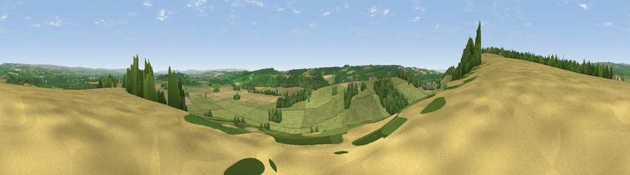

Viewpoint near Oswaldkirk
#18224 in England · top 43% of its area beats it · near OswaldkirkWhere it is
The exact computed spot (SE 61925 79075). Click the marker for map links.
The view, rendered

A 360° render of this exact spot computed from the terrain model, tree cover and land cover — summer colours, afternoon light, calibrated against photographs of famous viewpoints. Real trees, hedges and buildings will differ in detail.
The panorama
Grey silhouette: terrain skyline in each direction (720 bearings, Earth curvature and refraction included). Dashed green: skyline with trees (+15 m) and buildings (+8 m) as obstacles. Blue strip: how far the ground is visible on each bearing.
Where the view opens
Wedge length = distance to the farthest visible ground on that bearing (vegetation-aware). Rings at 10, 25 and 50 km.
What fills the view
67% grassland · 17% cropland · 15% woodland ·
Angular shares of the visible panorama (visual magnitude), not map area. Landscape diversity 0.39 (0–1 Shannon).
Key numbers
More beautiful places nearby
The staircase of upgrades: each row has a higher view potential than everything closer. Driving times are estimates from straight-line distance, calibrated against real road routing — check an actual route before setting out.
| Place | Direction | Drive | Score |
|---|---|---|---|
| Viewpoint near Oswaldkirk | W · 1 km | ~2 min | 57.3 |
| Viewpoint near Oswaldkirk | W · 1 km | ~3 min | 65.9 |
| Viewpoint near Ampleforth | W · 2 km | ~5 min | 76.6 |
| Viewpoint near Kilburn | WNW · 11 km | ~21 min | 79.3 |
| Hood Hill | W · 12 km | ~22 min | 79.6 |
| Viewpoint near Thirlby | WNW · 12 km | ~22 min | 81.5 |
| White Hill | NNW · 25 km | ~41 min | 84.2 |
| Viewpoint near Great Broughton | NNW · 25 km | ~41 min | 84.4 |
54.20369, -1.05217 · source: screening · position refined by local search. Computed location — check access rights before visiting.